O-01 · 跨盘身份与编辑入口
现状 已修复并验证
原问题：八字与紫微共用当前用户信息，可能混用姓名、性别和盘面；八字编辑跳错页面。
处理：各盘保存自己的输入快照和记录ID，显示、导出、保存、AI统一读取；编辑回到对应表单。
验证：真实Chrome：八字甲男2023、紫微乙女2026分别生成保存，再回放八字仍保留甲/男/2023；源码回归覆盖更新与导出。
边界：见本区块全局证据边界
首轮前端问题：7/7 已修复并验证。 真实认证19/19、记录与隔离30/30、额度故障14/14通过；Chrome真实Qwen Agent动作、流式聊天及刷新后的连续两轮上下文通过。前端84/84、后端69/69，类型检查、相关ESLint和H5构建通过。
本报告分别记录 frontend-only（3050）与 frontend-docker / backend-docker（3000/3001）。两套各有 11 个注册页面；本页首轮统计属于 frontend-docker，纯前端本轮结果见独立章节。
聊天页蓝紫设计及下载档案/导入档案已落地。真实JSON文件已下载落盘并重新导入，A→B→A完整回环、错误文件保护、空会话和刷新恢复均通过；本轮发现的文件输入生命周期和英文错误提示问题已修复。最终186/186、类型、Lint、H5构建全部通过。
frontend-only独立服务 http://127.0.0.1:3050/#/pages/chat/index；报告 http://127.0.0.1:3002/report.html#frontend-only。2026-10-11当前Chrome扩展实测，使用合成档案；本轮未启动后台、数据库或模型。此前全11页、本地Qwen及TOON文件核验为已保留的历史证据。
本轮实际完成标准浏览器下载和文件输入导入，读盘校验318字节并重新导入同一下载文件。次级“选择位置保存”的原生对话框、原生Cancel/Escape仍未实际验收；源码模拟取消不等于原生点击通过。手机为390/320桌面视口模拟，未验证真实软键盘。TOON31项历史检查不代表算法准确率或标准互操作。
2026-10-11最终全套186/186通过，归档49项、父页面入口22项。既有165/157/144/137日志保留作历史记录。
最终聊天档案检查 · 最终工程检查退出码 · 聊天页最终检查 · 全部退出码 · 最终157项日志 · 最终退出码 · 历史144项日志 · 历史137项日志 · 退出码 · 保留前轮基线最终vue-tsc --noEmit -p tsconfig.json退出0。
最终聊天档案检查 · 最终工程检查退出码 · 聊天页最终检查 · 全部退出码 · 最新类型检查日志 · 最新退出码 · 类型检查日志 · 退出码最终uni build -p h5退出0，3050继续提供H5开发版。
最终聊天档案检查 · 最终工程检查退出码 · 聊天页最终检查 · 全部退出码 · 最新H5构建日志 · 最新退出码 · 构建日志78个业务文件，0错误、0警告；--max-warnings 0退出0。
最终聊天档案检查 · 最终工程检查退出码 · 聊天页最终检查 · 全部退出码 · 最新逐文件Lint结果 · 最新退出码 · 逐文件结果定位JSDOM同毫秒事件被uni-h5-vue过滤的测试时钟问题；每个独立用户事件推进受控时钟，保留原断言与运行时。冻结时钟红→绿，目标重复10/10，移除Escape处理器的变异仍失败；真实Edge关闭与焦点恢复通过。未修改产品键盘逻辑。
冻结时钟失败 · 受控事件时钟通过 · 变异仍能检出缺陷 · 10次验证 · Edge真实键盘状态文件脚本、页面布局和独立整合审查由多个agent协作；主agent完成实际文件回环、响应式验收并独立运行186项全套、类型、Lint、构建、diff检查，全部通过。
最终聊天档案检查 · 最终工程检查退出码 · 聊天页最终检查 · 全部退出码 · 最新差异检查 · 最新检查退出码 · 整合审查与边界 · 差异检查实际下载到F:/download，严格读取318字节JSON后切换B，再导入原下载文件恢复A；角色/文本/时间一致，空档案和刷新自动恢复也通过。
Chrome逐步实际操作 · 磁盘字节与SHA-256校验 · 实际下载文件的逐字节副本此前原生工具因无法可靠判定浏览器URL而停止；本轮主入口已使用标准浏览器下载/文件输入完成实测。文件选择API拒绝空数组，不支持代替原生Cancel；未把刷新恢复页面计为取消成功。
Chrome逐步实际操作原问题：八字与紫微共用当前用户信息，可能混用姓名、性别和盘面；八字编辑跳错页面。
处理：各盘保存自己的输入快照和记录ID，显示、导出、保存、AI统一读取；编辑回到对应表单。
验证：真实Chrome：八字甲男2023、紫微乙女2026分别生成保存，再回放八字仍保留甲/男/2023；源码回归覆盖更新与导出。
边界：见本区块全局证据边界
原问题：六爻重复保存新增记录、起卦时间可能变成保存时间；同毫秒新纪录可能撞ID。
处理：统一记录合并逻辑、保留createdAt与起卦时间、稳定recordId，按类型加ID区分记录。
验证：Chrome八字与六爻各连续保存两次，三种盘历史合计仍3条；源码回归覆盖同ID不同类型删除和同毫秒新记录。
边界：见本区块全局证据边界
原问题：超过200条静默丢弃、旧TTL到期删除历史；损坏JSON可能被空数组覆盖。
处理：保存历史不设自动过期和200条裁剪；保留旧过期记录；损坏存储保留原值并阻止覆盖。
验证：实际源码故障回归验证201条、过期数据、损坏JSON与更新时间。
边界：未模拟真实磁盘耗尽；已被旧版本删除的数据无法恢复。
原问题：1960-02-03 04:05女性等合法输入首段大运无流年，访问getLiuYue失败。
处理：选择首个有流年的周期，缺少年份时清空关联行并保护访问。
验证：真实lunar库运行该边界及1970年前时间，源码回归通过。
边界：见本区块全局证据边界
原问题：窄屏年龄文本拥挤；放大层被变换祖先限制，滚动后关闭按钮移出视口。
处理：宫格文本换行并增加放大入口；H5宫位弹层Teleport到body，限制视口高度，内部滚动，补关闭焦点/Tab/Escape。
验证：390×844真实Chrome：弹层x16/y76/w343/h692，关闭键在屏内；Escape关闭并恢复官禄按钮焦点。实际源码18项UI回归通过。
边界：见本区块全局证据边界
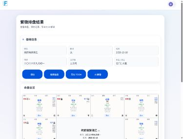
原问题：坏配置未验证、存储失败仍可能提示成功；本地服务被不必要地要求Key。
处理：读取与写入统一验证地址/模型/供应商，按端点判定Key需求，切换供应商清理旧Key，报告存储失败。
验证：Chrome空地址被阻止；选择Ollama自动填充，修改11439和Qwen模型并空Key保存，刷新仍保留。稳定页面的供应商选择通过，热更新期间现象未计入缺陷。
边界：见本区块全局证据边界
原问题：冷刷新丢失当前盘上下文、追问不带盘、用户消息重复；错误消息混入后续请求。
处理：每轮恢复所选盘及独立身份，过滤等待/失败消息并去重；禁止并发发送并在卸载时取消。
验证：Chrome先冷刷新八字聊天，再请求本地Qwen：首轮回答纯前端八字甲/男/2023/辛丑；追问回答纯前端八字甲/癸卯。输入恢复，未混用紫微资料；源码验证去重和异常过滤。
边界：见本区块全局证据边界
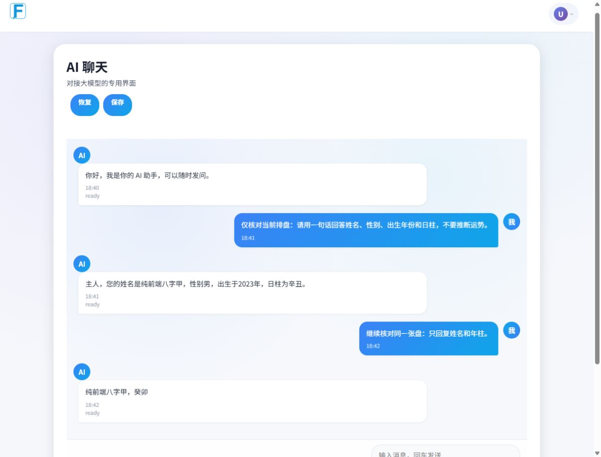
原问题：错误流卡住、恢复覆盖新消息、归档与发送并发；独立审查发现文件选择取消后archiveBusy一直为真。
处理：错误流标记失败并排除错误归档；防止异步恢复覆盖新消息；归档与发送互斥；文件cancel/空change抛AbortError，finally释放锁并保留当前对话。
验证：独立审查复现cancel锁死后补修；真实ChatPanel源码9项回归通过，包括cancel/空change/有效文件、错误流和异步恢复。前轮全套105项通过。 本轮继续补查并修复档案格式、缓存故障与文件失败保护，详见O-15；原有9项ChatPanel用例仍全部通过。
边界：原生文件选择与目录授权的外部档案内容不等同于源码平台模拟。
原问题：TOON导出在创建/点击下载链接异常时泄漏Blob URL，正常分支立即释放URL，并将发起下载误报为“已下载”。
处理：八字、紫微共用下载辅助函数，finally延后释放URL，保留失败时复制内容的路径；提示改为“已发起 TOON 下载，请查看下载列表”。
验证：两份真实Edge下载已落盘：八字15,399字节，紫微50,990字节；31/31独立内容检查通过，源文件与报告副本逐字节一致。现有TOON10项源码回归继续保留。
边界：实际文件内容与所用合成盘吻合；不宣称命理算法全域正确或外部TOON解析器互操作通过。浏览器download事件仍超时，但文件落盘已独立确认。
修复前失败 · 10项导出回归 · Edge八字提示 · Edge紫微提示 · 31项实际文件验收 · 八字下载网页证据 · 八字实际文件副本 · 紫微实际文件副本
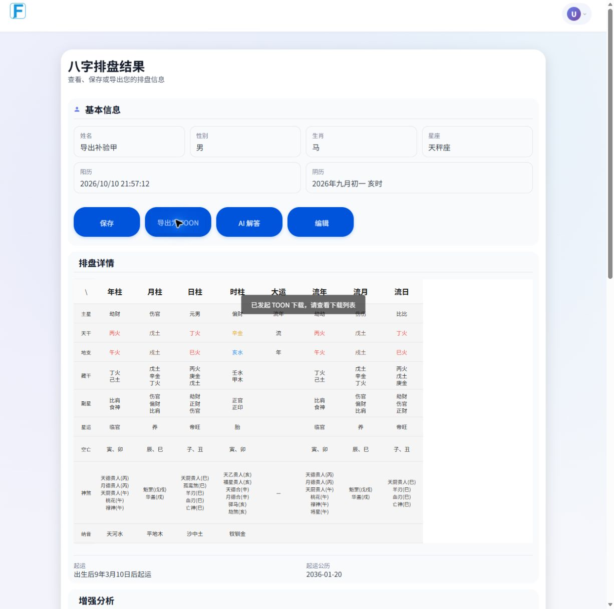
原问题：坏格式被隐式转换；读取失败或空文件可用旧备份覆盖当前聊天；可选缓存异常阻断恢复或误报保存失败；取消/失败保存提前替换旧备份；聊天下载也可能泄漏URL并误报已保存。
处理：完整校验v1档案及每条role/text/time后才替换会话；手动读取失败保留当前内容，自动恢复可安全使用有效备份；导入更新备份并清理旧句柄；缓存故障隔离，原生文件写入完成后才更新备份；下载复用共享清理逻辑并明确提示仅已发起下载。
验证：归档新增22项和原有ChatPanel9项全部通过：格式拒绝、空文件/读取失败、取消保存、缓存故障、真实UTF-8文件/Blob字节往返及唯一消息ID。与TOON10项联合41/41，最终全套137/137。
边界：文件API句柄受控，字节来自真实临时文件；不能等同于真实浏览器OS文件选择器往返。Edge触发恢复后工具未取得选择器，Escape后页面仍忙碌，随后刷新合成测试页；该路径未标通过。
原问题：保存/导入A后，“恢复”直接复用A句柄，无法选择B；A损坏时也无法改选有效档案。
处理：手动恢复始终打开原生选择器或input入口；记住的文件句柄只供自动恢复使用。
验证：Chrome主入口实际导入A后另选B，再选择F:/download/ai-chat-2026-10-11.json恢复A；两次切换均成功，角色、文本和时间精确匹配。原生旧入口另有受控回归。
边界：实际通过的是新的标准文件输入主入口。旧File System Access原生对话框的选择/取消未完成真实操作验收。
Chrome逐步实际操作 · 磁盘字节与SHA-256校验 · 修前失败 · 38项通过 · 审查与验证边界
原问题：聊天父页面固定300ms清除归档忙状态，未等待子面板保存或恢复完成；慢文件操作期间可重复触发，子调用同步异常时还可能留下忙状态。
处理：保存与恢复处理函数改为await子面板操作，并在finally统一释放忙状态；操作未完成时持续阻止重复保存/恢复，完成、取消、异步失败、同步异常和面板缺失均可释放。
验证：父页面22项行为测试覆盖三个入口持续等待、互斥和异常解锁；真实Chrome选择待定时三个按钮和输入禁用，成功/错误文件处理后全部解除。
边界：原生Cancel未实际操作；对应取消异常解锁通过源码回归。
Chrome逐步实际操作 · 最终工程检查退出码 · 父页面修前12项失败 · 父页面13项回归通过 · 最终157项回归 · 最终工程检查退出码
原问题：先记住档案A，再保存或导入B；若本地备份成功而IndexedDB句柄更新失败，重开会话会优先读取旧A。
处理：更新备份前标记旧句柄失效，句柄更新成功后才清除标记。自动恢复跳过失效句柄，读取最新可用备份。
验证：4个故障场景先失败后通过，覆盖原生导入、输入选择导入、原生保存、下载保存；新增回归仍允许读取正常已记住文件的外部更新。
边界：使用真实源码及临时文件字节，选择器和IndexedDB为受控边界。全部缓存不可写时，已完成文件操作仍有效，但不保证下次自动恢复为最新。
故障复现 · 修复后定向回归 · 165项源码回归 · 独立agent审查与边界
原问题：自动读取A未完成时手动导入空会话、取消导入或保存空会话，旧任务可能在稍后覆盖当前会话。
处理：手动操作递增操作序号；自动恢复在异步读取完成后再次检查序号，只应用仍有效的结果。
验证：3个延迟读取故障先失败后通过；新增8项归档回归后全套165/165通过。
边界：受控延迟回归验证并发保护，不代表已完成原生Windows对话框实测。
故障复现 · 修复后定向回归 · 165项源码回归 · 独立agent审查与边界
原问题：nvue默认纵排导致头像、消息及输入/发送错位；上游缺少确定高度，消息区仅随内容增高；输入框停留在默认300px宽。
处理：仅整理聊天页：单一标题、独立档案工具条、蓝紫按钮与气泡、完整视口高度链、底部输入区；主入口下载档案/导入档案，支持时提供弱化的选择位置保存。窄屏主按钮并排等宽，提示说明导入会替换会话；隐藏ready内部状态并支持键盘操作。
验证：最终Chrome桌面1211×922、390×844、320×640均无页面横向或纵向溢出；窄屏消息区独立滚动，输入和按钮仍可见。Enter实际打开导入并成功恢复文件，控制台无warning/error。
边界：手机检查为桌面浏览器视口模拟，未覆盖真实手机软键盘或原生App；本轮仅聊天页。
最终桌面 · 390px最终布局 · 320px独立滚动 · 最终DOM尺寸 · 控制台检查 · 改版前 · 桌面改版 · 390px · 320px多行输入 · 真实DOM尺寸
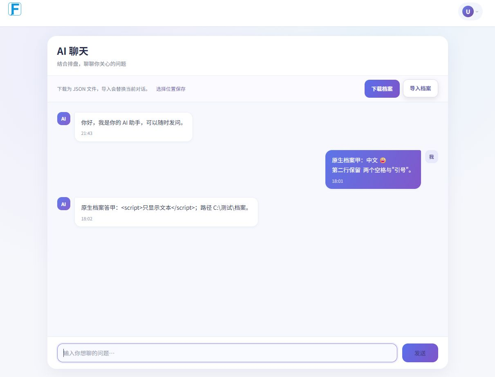
原问题：原保存/恢复入口会随浏览器能力切换到原生文件系统对话框，操作方式和完成含义不够清楚。
处理：按已确认设计提供明确的下载档案和导入档案；原生选择位置保存保留为支持浏览器中的次级操作。共用同一校验、忙状态、并发保护及缓存逻辑。
验证：实际下载318字节JSON，磁盘文件时间与点击对应；严格UTF-8、v1、kind、savedAt、完整消息和副本等9项检查通过。A→B→重新导入真实下载A通过；草稿及欢迎消息未写入文件。全套186/186通过。
边界：下载事件监听超时，但实际文件已落盘并独立读取；不能据此把次级原生位置保存或Windows Cancel标为已验收。
Chrome逐步实际操作 · 磁盘字节与SHA-256校验 · 实际下载文件的逐字节副本 · 新入口故障基线 · 新入口回归 · 最终工程检查退出码
原问题：真实Chrome触发filechooser后，设置所选文件报No node found for given backend id。临时input未挂到文档，选择无法完成，页面停在等待状态。
处理：选择前隐藏挂载input到页面，选择/取消后清除监听并移除节点；同步点击异常也清理并进入现有失败和解锁流程。
验证：修复前文档文件输入节点数0、实际选择失败；修复后选择期间为1，真实档案导入成功且结束后为0。新增4项生命周期回归先失败后通过；49项归档回归通过。
边界：浏览器扩展导入互操作问题有真实复现和复测；原生对话框Cancel点击仍未验证，取消事件清理有源码测试。
Chrome逐步实际操作 · 未挂载故障 · 生命周期回归 · 最终工程检查退出码
原问题：实际导入零字节或损坏JSON时，页面直接显示英文JavaScript解析位置和内部错误，用户难以理解。
处理：空文件提示“档案文件为空”；损坏JSON提示“档案内容无法解析，请选择有效的 JSON 文件”；结构校验仍使用原有格式错误提示。
验证：两项新增提示回归先失败后通过。Chrome重新导入空文件和损坏JSON，已看到对应中文提示；消息ID、内容、草稿未改变，按钮解除忙状态。错误角色与版本也经过真实文件导入拒绝。
边界：本轮覆盖零字节、损坏JSON、错误角色和不支持的版本；不是任意大小文件或所有异常编码的穷举测试。
Chrome逐步实际操作 · 英文错误基线 · 中文提示回归 · 最终工程检查退出码
| 编号 / 模块 | 检查项 | 现状 | 实际结果 | 证据 |
|---|---|---|---|---|
| O-T01 首页 | 独立3050首页无记录冷启动 | 通过 | 三类工具、五个快捷指令、Agent区均可见；无缓存提示明确，无服务端账号额度控件。 | 查看证据 |
| O-T02 Agent | 未配置AI发送 | 通过 | 显示请先在设置页面配置AI API，输入恢复可用。 | 查看证据 |
| O-T03 设置 | 空配置保存 | 通过 | 阻止空地址保存，显示请输入API地址。 | 查看证据 |
| O-T04 设置 | 供应商切换 | 通过 | 早期热更新期间两次选择未更新；代码稳定后冷刷新复测正常选择Ollama并填充地址/模型。不计为确认缺陷。 | 查看证据 |
| O-T05 键盘 | 菜单Enter/Space/Escape | 通过 | 修复uni-h5事件归一化边界后，Enter与Space展开，Escape关闭并恢复焦点。 | 查看证据 |
| O-T06 关于 | 关于页访问与内容 | 通过 | 三段介绍和娱乐提示显示，键盘菜单可导航进入。 | 查看证据 |
| O-T07 | 八字排盘、编辑与重复保存 | 通过 | 姓名纯前端八字甲、男、2023/10/10；编辑回到正确输入页；保存两次历史仍仅1条。 | 查看证据 |
| O-T08 | TOON 导出 | 通过 | 原Chrome页面点击记录保留；后续Edge实际下载文件已读取并核验，两类盘31项内容检查全部通过。下载事件超时是工具未返回路径，未影响此处已验收文件落盘。 | 实际落盘及内容 · 后续下载点击 |
| O-T09 | 设置本地供应商与刷新持久化 | 通过 | 冷刷新后 Ollama 正常选中并填充默认地址；改为本机11439、qwen3.8:latest，空Key保存成功；刷新仍保留。O-T04未复现，归于修复过程热更新干扰。 | 查看证据 |
| O-T10 | 真实本地 Agent 请求 | 通过 | 首次真实Qwen误选工具，已加明确输入页目标冲突校验。复测同句返回紫微入口并实际导航成功，参见O-T17；模型质量并非全域保证。 | 查看证据 |
| O-T11 | 三类保存与跨盘回放 | 通过 | 分别生成八字甲男2023、紫微乙女2026、六爻丙；八字和六爻重复保存均不新增，历史3条；搜索八字后回放仍为甲/男/2023。 | 查看证据 |
| O-T12 | 六爻排盘与真实复制 | 通过 | 电脑自动6爻生成坎为水→风水涣；复制文本包含原起卦时间、主题和6行爻象。 | 查看证据 |
| O-T13 | 冷刷新聊天与本地模型两轮上下文 | 通过 | 第一轮准确回复纯前端八字甲/男/2023/辛丑；第二轮继续回复甲/癸卯，输入恢复可用，未混用紫微资料。 | 查看证据 |
| O-T14 | 紫微历史回放与冷刷新 | 通过 | 历史查看直接到结果，女/2026/10/10/土五局/巨门火星保持；冷刷新同样恢复。 | 查看证据 |
| O-T15 | 390px紫微放大弹层与键盘关闭 | 通过 | 修复后官禄对话框x16,y76,w343,h692，完整位于390×844；Escape关闭、焦点恢复放大按钮；无页面横向溢出。 | 查看证据 |
| O-T16 | 六爻历史回放与冷刷新 | 通过 | 历史直达坎为水→风水涣结果，原主题和18:39起卦时间保持，冷刷新仍有完整六爻结果。 | 查看证据 |
| O-T17 | Agent明确目标复测及执行入口 | 通过 | 同句再次调用真实Qwen，显示打开紫微排盘输入页按钮，点击进入正确紫微输入表单；错误目标拦截由源码受控回归验证，本次模型正确返回。 | 查看证据 |
| O-T18 | 六爻手工、时间、单数、双数、汉字、卦名、在线分支 | 通过 | 自动以外7种方式均经Chrome实际生成结果：手工6少阳→乾为天静卦；时间→天火同人/天雷无妄；2652→泽雷随/天雷无妄；12与34→雷泽归妹/地泽临；天地→雷水解/地水师；卦名地雷复→对应静卦；在线6次摇卦→乾为天/天泽履。仅验证代表样本流程，非全域算法准确性。 | 手工全阳 · 时间起卦 · 单数2652 · 双数12与34 · 汉字天地 · 卦名地雷复 · 在线六次 |
| O-T19 Edge补验 / 导出 | 八字与紫微下载发起提示 | 通过 | 分别生成合成甲男/乙女盘，点击导出后均显示“已发起 TOON 下载，请查看下载列表”。该项仅验证页面提示，不计为文件落盘。 | 八字 · 紫微 |
| O-T20 Edge补验 / 键盘 | 菜单Enter打开、Escape关闭及焦点返回 | 通过 | Enter后aria-expanded=true；聚焦AI设置按Escape后菜单消失、aria-expanded=false、activeElement的aria-label为用户菜单。 | 查看证据 |
| O-T21 Edge补验 / 档案 | 真实原生文件选择与取消 | 部分验证 | 恢复时草稿保持、输入禁用；等待filechooser超时，工具Escape未解除页面忙碌，随后刷新合成测试页恢复。工具未接管原生对话框，未选择/导入外部文件，未标为通过。文件与取消逻辑另有22+9项源码边界回归。 | 查看证据 |
| O-T22 Chrome / 聊天UI | 最终桌面、390px、320px与键盘布局 | 通过 | 最终Chrome桌面1211×922、390×844、320×640均无页面横向或纵向溢出；窄屏消息区独立滚动，输入和按钮仍可见。Enter实际打开导入并成功恢复文件，控制台无warning/error。 | 最终桌面 · 390px最终布局 · 320px独立滚动 · 最终DOM尺寸 · 控制台检查 |
| O-T23 Chrome / 实际聊天档案 | 实际下载、另选B、重新导入下载A | 通过 | 导入A后点击下载档案，F:/download/ai-chat-2026-10-11.json实际新增318字节；9项文件核验通过。另选B后重新导入原下载A，角色/文本/时间完全一致，草稿保留。下载事件超时未据此判失败。 | Chrome逐步实际操作 · 磁盘字节与SHA-256校验 · 实际下载文件的逐字节副本 |
| O-T24 Chrome / 无效文件 | 零字节、损坏JSON、错误角色、错误版本 | 通过 | 4类实际磁盘文件均被拒绝；会话消息ID、内容和草稿不变，控件恢复可操作。空/损坏JSON的英文异常已修复并看到中文提示。 | Chrome逐步实际操作 |
| O-T25 Chrome / 空会话 | 合法messages空数组导入与重新打开 | 通过 | 合法空档案替换A，只显示欢迎消息；刷新后仍为空会话；随后重新导入实际下载A成功。 | Chrome逐步实际操作 |
| O-T26 Chrome / 自动恢复 | 刷新自动恢复最后导入档案 | 通过 | 重新导入磁盘下载A后刷新，两条实际消息自动恢复，中文、表情、换行、角色与时间精确一致。 | Chrome逐步实际操作 |
| O-T27 Chrome / 键盘 | Enter打开导入并完成真实文件选择 | 通过 | 在导入档案按钮按Enter成功触发filechooser；选择实际下载文件后恢复A，消息一致，按钮解锁。 | Chrome逐步实际操作 |
真实认证19/19、记录与隔离30/30、额度故障14/14通过；Chrome真实Qwen Agent动作、流式聊天及刷新后的连续两轮上下文通过。前端84/84、后端69/69，类型检查、相关ESLint和H5构建通过。
前端 127.0.0.1:3000，后台 127.0.0.1:3001，独立 MySQL 8.4.11 在 127.0.0.1:13306/bazi_e2e，HTML 报告 127.0.0.1:3002。仅使用本机合成测试账号，未使用真实个人资料。后端启用请求签名和认证，前端保留既有开发 CSP 配置。 Qwen3.8同一27B模型通过Vulkan运行于127.0.0.1:11439；五个服务由独立本机后台进程保持运行，无开机启动注册。
三组在线验收使用实际应用和 MySQL；工程回归中部分使用替身，见各项边界。额度故障测试的模型上游是本机受控夹具，不能作为真实 Qwen 回复证据；真实模型回复和扣费已另列。验证码直接写入测试数据库，未验收 SMTP 发信与收件。
原问题：通用文本清理会改变密码中的尖括号、引号及首尾空格。
处理：认证密码作为原始凭据保留；邮箱、用户名继续按各自规则处理。
验证：真实 MySQL 账号使用含特殊符号与空格密码登录成功；错误地 trim 后的密码被拒绝 401。Chrome primary 账号登录成功。
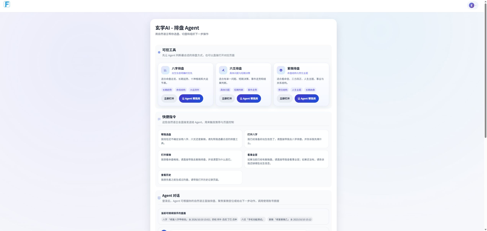
原问题：注册接口本身缺少验证码约束；客户端先消费验证码容易造成注册失败后无法重试。
处理：注册请求直接提交 verification_code；服务端锁定同邮箱、同用途、未过期且未使用的验证码，消费与创建账号放在同一事务。
验证：真实注册无码与错码 400、有效码注册成功、复用失败；生产事务助手在真实 MySQL 故障注入回滚后可正常注册。
边界：验证码由测试脚本播种；SMTP 投递未测试。
原问题：刷新时读取、撤销与新令牌写入缺少原子互斥。
处理：事务内 FOR UPDATE 锁定旧令牌，条件撤销且核对更新行数，再写入新令牌。
验证：同一 refresh token 并发请求结果为 200 与 401；旧令牌不能复用，logout 清 cookie 并撤销；回滚后原令牌仍可正常刷新。
边界：已有 access token 在其配置有效期内保持有效。
原问题：六爻保存缺少记录 ID 与起卦时间快照；历史页只读取八字记录，紫微与六爻无法完整管理。
处理：六爻首次 POST 后复用 ID 执行 PUT，防止重复点击与迟到响应污染新盘；历史合并三类记录并按类型回放。
验证：真实接口30/30通过。Chrome三类各连续保存两次，MySQL确认每类仅一条且ID均为2；编辑八字后仍为原ID。历史三类型正确回放，六爻刷新后保留原起卦时间；搜索仅显示匹配的紫微记录。
真实记录 30 项 · Chrome操作后的数据库记录 · 三类历史 · 真实搜索
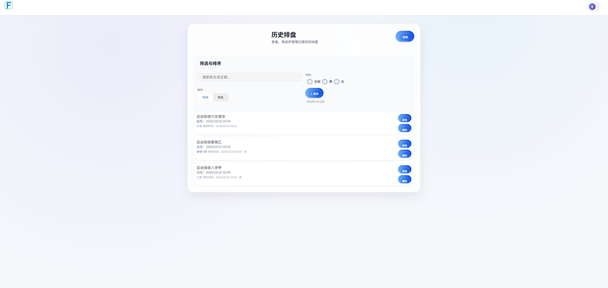
原问题：先检查后扣减存在竞态；模型失败可能仍记账。
处理：HTTP/WS 共用事务预留额度，成功后提交扣减及使用记录，失败、断开、超时回滚；数据库错误时拒绝继续生成。
验证：真实MySQL + HTTP/WebSocket 14/14通过：零额度拒绝；失败、空回复、截断、断流、取消、约181秒超时均不扣额度；最后1份混合并发仅1成功且usage仅加1。
边界：生成期间持有连接和用户行锁；尚未进行生产负载测试。
原问题：Ollama WebSocket 文本提取和 UTF-8 跨块解码不完整；空响应或截断可能被当成成功。
处理：统一供应商解析器、UTF-8 StringDecoder、完成标识与非空响应校验；提交记账后才发送完成事件。
验证：31个服务端LLM回归与真实数据库受控Ollama上游用例通过，涵盖中文跨块、完成标识、空内容及截断；真实Qwen网站流式路径单列B-07。
原问题：Ollama qwen3.8:latest 已存在，但默认推理出现 GGML 内存分配失败，CPU 路径出现 CPU_REPACK 分配失败。
处理：同一qwen3.8 27B Q4_K_M GGUF通过官方llama.cpp运行；关闭repack、启用mmap、8192上下文，RX9070XT Vulkan卸载30层。后台chat/agent使用127.0.0.1:11439 OpenAI兼容完整端点。
验证：真实Agent777输入/56输出，模型处理约29.7秒，Chrome显示回复并成功执行历史导航；数据库5→4且usage0→1。八字流式聊天6722输入/16输出约123.4秒，答对盘主姓名与性别，页面额度4→3且数据库usage1→2。 最终冷启动双轮均收到正确盘面字段；额度20→19→18，usage3→4→5。 最终两轮模型处理分别约73.8秒和78.0秒，输入6702/6742、输出18/23 token。
边界：仅本机文字单并发，8192上下文，单次输出上限192token；本轮观察长回答约1.5–3token/s。未做命理领域答案准确率、长期稳定性或负载验收；不同时加载CPU副本。
Qwen短句 · 8192上下文实验 · Vulkan2072token实测 · 实际网站模型配置 · Agent回复 · 执行导航 · 真实流式回复 · 实际扣费 · 模型实际处理时序 · 最终连续两轮 · 最终数据库扣减 · 五个服务实际健康状态 · 最终两轮模型处理时序
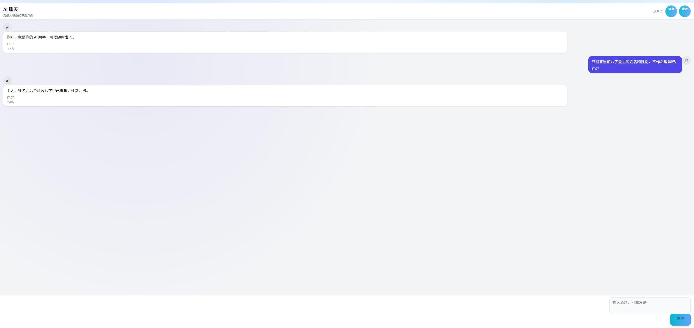
原问题：验证命令经pnpm run触发自动依赖整理，将原npm依赖移入.ignored后安装未完成，造成临时Sass解析失败；不是原网站产品缺陷。
处理：恢复54个原依赖目录；后续直调本地CLI，不触发包管理器安装或升级。
验证：sass解析和编译恢复，Chrome已可进入三类结果并保存；原lockfile未因恢复升级。
原问题：uni.request默认60秒，早于后台180秒，慢模型在回复前被客户端取消。
处理：仅LLM请求显式设置协调的超时，普通API保持默认；同步nginx API读超时。
验证：195秒LLM超时已生效；Chrome完整八字调用约123秒正常完成，未在默认60秒被取消。默认普通API时限不变；nginx仅静态配置验证。
原问题：已发送SSE遇到任何错误都会再发普通HTTP，首个请求可能已计费。
处理：发送前判断流式支持；已发送后的网络、流式和模型上游错误不自动重发。仅应用认证中间件明确拒绝的401允许共享刷新后重试一次，见B-14。
验证：新增策略回归验证已发SSE遇错误、网络失败或缺DONE时不产生第二请求；定时abort和正常完成均通过。最终前端84/84。
原问题：仅首次请求加入盘面system信息，后续无状态请求无法继续看到该盘。
处理：每次请求都附当前盘面上下文，避免重复污染可见聊天记录。
验证：首轮与后续轮均包含当前盘面system上下文。Chrome刷新聊天页后，第一轮正确回答盘主姓名、男；第二轮未重述资料，仅追问出生日期和性别，模型正确回答2026年10月10日、男。两次各扣1次额度且usage各加1。
最终84项及工程检查 · 完整回归日志 · 第一轮 · 第二轮 · 实际扣减
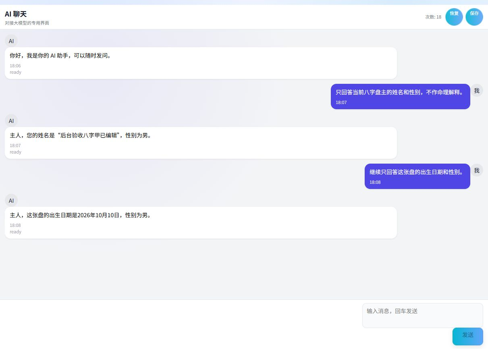
原问题：面板先加入本轮user及waiting，buildMessages使用未过滤的历史末条做去重，导致本轮user重复发送。
处理：根据过滤后的实际请求历史判断末条消息，并补面板真实调用顺序回归。
验证：模拟面板真实user→waiting→send顺序，修复前本轮用户消息2条导致失败；修后仅1条。最终84/84通过。
最终84项及工程检查 · 完整回归日志 · 修复前实际失败
原问题：流式fetch未共享登录刷新；进一步审查发现上游模型401被服务端转换成用户登录过期文案，仍可能误刷新并重复调用。
处理：流式请求仅遇应用认证中间件明确401时共享刷新锁，更新token与签名并最多重试一次；模型上游401/403在HTTP和WS统一映射为502及LLM_UPSTREAM_AUTH_FAILED，与用户会话区分。
验证：前端5项认证边界用例通过；后端新增10项loopback HTTP/WS用例修复前失败，修复后全部通过。后端69/69，最终前端84/84通过。已重载后台，真实Qwen成功路径再次通过。
边界：过期/并发刷新与上游鉴权失败由自动化夹具验证；未在Chrome等待完整access token有效期再验收。新10项回归使用受控上游和数据库替身；真实MySQL认证19项及额度14项证据独立列出。
前端修前 · 前端认证边界 · 真实错误映射修前失败 · 后端69项 · 最终前端工程验证
原问题：新标签直接访问带from的聊天页时store为空，只有进入首页才恢复本地盘面，模型因此未收到盘面。
处理：按from仅恢复对应八字、紫微或六爻；已有激活盘面不被缓存覆盖，已计算盘面不重算，无缓存不虚构数据。
验证：新增7例：三类冷启动修前失败，修后7/7；最终前端84/84通过。Chrome刷新聊天页后真实双轮正确回答缓存盘主姓名、出生日期与性别。
修前直接访问实际回复 · 修前失败 · 修后7项 · 刷新后真实双轮
| 流程 | 现状 | 实际结果 | 证据 |
|---|---|---|---|
| 真实登录 | 通过 | Chrome 使用 primary 合成账号登录后显示用户名、注销菜单，Agent 输入提示切为已登录。 | DOM |
| 三类保存与重复保存 | 通过 | 每类保存两次，真实MySQL各1条；八字编辑后保持ID2。 | 实际证据 |
| 三类历史与回放 | 通过 | 列表同时显示八字/紫微/六爻；回放姓名、性别及时间对应，六爻刷新保持。 | 实际证据 |
| 历史搜索 | 通过 | 搜索紫微标题仅显示1条匹配记录。 | 实际证据 |
| 真实Agent与页面动作 | 通过 | 777输入/56输出约29.7秒，生成历史导航按钮，点击后进入三类历史；额度仅扣1次。 | 实际证据 |
| 真实Qwen流式聊天 | 通过 | 收到正确盘主姓名与性别；模型123.4秒完成；额度4→3，usage1→2。 | 实际证据 |
| 历史性别筛选 | 通过 | 选择女后仅显示紫微乙1条。 | 实际证据 |
| 冷启动恢复与真实两轮追问 | 通过 | 刷新聊天页，首轮正确姓名/性别，第二轮正确日期/性别；额度20→19→18，usage3→4→5。 | Chrome实际回复 · 数据库 |
| 人工测试额度准备 | 通过 | 在最终双轮前，仅将合成primary账号额度2调整为20，未改变usage；该设置不作为应用计费测试结果。真实扣减从20开始单列，剩余额度供用户手动操作。 | 调整前后审计 |
本次按用户授权由三个 agent 并行修复，逐项整合及复测。首轮 81 条记录保留为历史基线。
已修复并验证 7 项；真实后端与 AI 的新增验收见上方最新状态。
| 编号 | 复测项 | 结果 | 实际结果 | 证据 |
|---|---|---|---|---|
| R-01 | 双向跨模块人物/时间/性别一致性 | 通过 | 八字甲/男/2026、紫微乙/女/2023，各自结果保持一致。 | 复测证据 |
| R-02 | 八字编辑直接进入表单 | 通过 | 目标为 /pages/index/index，当前八字数据完整回填。 | 复测证据 |
| R-03 | 仅改变性别后重算 | 通过 | 八字改女后主星为元女；紫微仍保持原来的乙/2023。 | 复测证据 |
| R-04 | 服务正文打开与返回 | 通过 | 完整按钮中心点击打开正文，Enter 关闭返回原注册表单。 | 复测证据 |
| R-05 | 隐私正文键盘与移动滚动 | 通过 | Space 打开、Escape 关闭，390px 阅读区可滚动到底。 | 复测证据 |
| R-06 | 390px 年龄列表不跨格 | 通过 | 图宽304px，年龄块宽44px且scrollWidth44px，十二宫均受约束。 | 复测证据 |
| R-07 | 移动放大面板完整位于视口 | 通过 | 顶部75.95px/底部768.03px，年龄14px，关闭与双击通过。 | 复测证据 |
| R-08 | Tab/Enter发送与事件隔离 | 通过 | 焦点进入发送按钮并显示轮廓；Enter只打开登录提示。 | 复测证据 |
| R-09 | Space快捷指令 | 通过 | Space激活快捷指令并走统一登录引导。 | 复测证据 |
| R-10 | 菜单与工具键盘导航 | 通过 | 菜单Tab可达，Escape恢复头像焦点，工具Enter打开对应表单。 | 复测证据 |
| R-11 | 输入框Enter不自动确认弹窗 | 通过 | 停留首页登录提示，取消后草稿保留。 | 复测证据 |
| R-12 | 匿名发送不请求Agent API | 通过 | 自由输入和快捷指令均拦截，取消保留草稿，确认进入登录。 | 复测证据 |
目标：http://127.0.0.1:3000/#/，对应 frontend-docker。浏览器使用 Chrome 扩展控制，Chrome 154 / Windows；桌面主要视口 1211×922，手机布局视口 390×844。手机检查属于桌面浏览器尺寸模拟，未模拟真实触屏、软键盘或移动浏览器。
运行 Node v24.19.0、uni-app / Vue 3 / Vite H5 开发服务。当前启动进程临时设置了 VITE_CSP_ALLOW_UNSAFE_STYLE_INLINE=true；本报告结论基于该运行配置，未验证默认开发 CSP 或生产部署 CSP。首轮仅前端运行，后台未启动。后续已启动真实后台与独立 MySQL，并创建合成账号和记录验收；当前状态以“后台联调与修复现状”为准。
| 页面 | 路由（# 后） | 已检查内容 | 边界 |
|---|---|---|---|
| Agent 首页 | / | 工具卡、快捷指令、空输入、错误恢复、菜单、键盘 | AI 执行动作受后台阻塞 |
| 八字输入 | /pages/index/index | 姓名、男女、历法切换、农历年份、阳历分钟、取消、回填 | 代表性日期测试 |
| 八字结果 | /pages/index/detail | 详情、时间线、保存拦截、AI 入口、编辑、深链接、跨模块 | 导出实际文件未验证 |
| 六爻输入 | /pages/liuyao/index | 全部 8 类起卦方式、必填、单数双数汉字校验、手机排盘 | 在线方式验证六次逐爻生成 |
| 六爻结果 | /pages/liuyao/result | 本卦变卦、六爻、卦辞、复制、保存拦截、AI 入口、深链接 | 服务端保存未验证 |
| 紫微输入 | /pages/ziwei/index | 姓名、性别、历法、重排、编辑回填、不同年份 | 代表性日期测试 |
| 紫微结果 | /pages/ziwei/result | 十二宫、聚焦、双击放大、大限流年流月、保存拦截、AI 入口、无数据提示 | 手机总览文字挤压；导出文件未验证 |
| 登录/注册 | /pages/auth/auth | 登录必填、请求失败、注册邮箱/用户名/密码校验、协议 | 验证码与真实注册登录受阻 |
| 历史记录 | /pages/history/list | 匿名空状态、刷新、登录入口 | 登录后筛选及记录读写受阻 |
| 聊天 | /pages/chat/index | 空消息、请求失败、三种排盘入口、保存入口、本地备份恢复 | 模型回复与外部档案导入未完成 |
| 关于 | /pages/about/index | 正文、娱乐提示、图片加载、手机适配 | 仅核对展示，未核验故事真实性 |
每项优先展示当前修复状态、改动与复测证据，展开可查看首轮发现。已修复不代表相关后台业务已完成端到端验收。
修复内容：八字、紫微各自保存姓名、性别、出生时间与记录 ID 快照。显示、编辑、保存、导出、聊天及 Agent 上下文统一读取对应快照；出生时间或性别变化时整体重算。历史回放重新计算，迟到的保存响应不会污染新盘。
验证结果：Chrome：八字甲/男/2026 → 紫微乙/女/2023 → 返回八字，身份、日期与元男一致；仅改八字性别后显示元女，紫微仍保持乙/2023。17 个数据回归及 2 个 Agent 上下文回归通过，含双向导出、聊天输入、保存路径和异步响应隔离。 后台轮新增Chrome三类独立身份保存/回放与MySQL核对，见后台证据。
待补验收：真实MySQL写入及Chrome三类回放已补验收；实际TOON下载文件内容尚未读取。AI网站回复见B-07。
八字初始输入 · 不同人物紫微盘 · 返回八字一致性 · 性别重算 · 反向紫微一致性 · 35 项回归测试 · 真实数据库快照
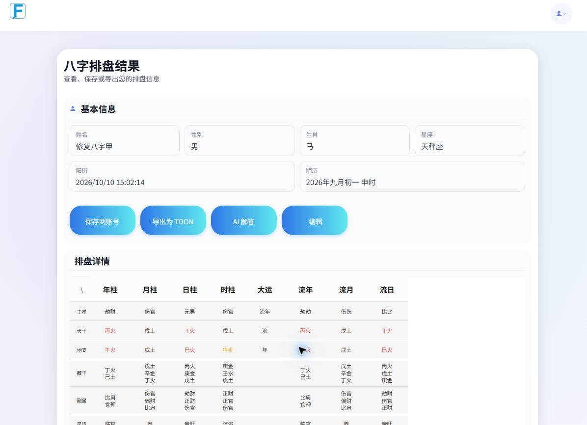
证据方式：Chrome 实际复现 + 源码核对
先生成跨模块八字甲/男/2026-10-10，再生成跨模块紫微乙/女/2022-10-10，回看八字时姓名和性别为紫微乙/女，日期与四柱仍为旧2026男性八字。
原始影响：同一结果页混合两个人物的信息。保存、导出和 AI 上下文可能继续混用当前用户信息与旧盘面，这是源码推断；服务端保存结果本轮未验证。
原始建议：为各类排盘保存独立的输入快照；结果显示、导出、保存和聊天统一读取该快照。时间或性别变化时应整体重算，不能仅以已有 solar.year 判断无需计算。
首轮源码位置：F:/github/xuanxue_AI-chat-agent/frontend-docker/src/pages/index/detail.nvue:23F:/github/xuanxue_AI-chat-agent/frontend-docker/src/pages/index/detail.nvue:243F:/github/xuanxue_AI-chat-agent/frontend-docker/src/pages/ziwei/index.nvue:383
查看证据 · 49-cross-bazi-before · 50-cross-ziwei-result
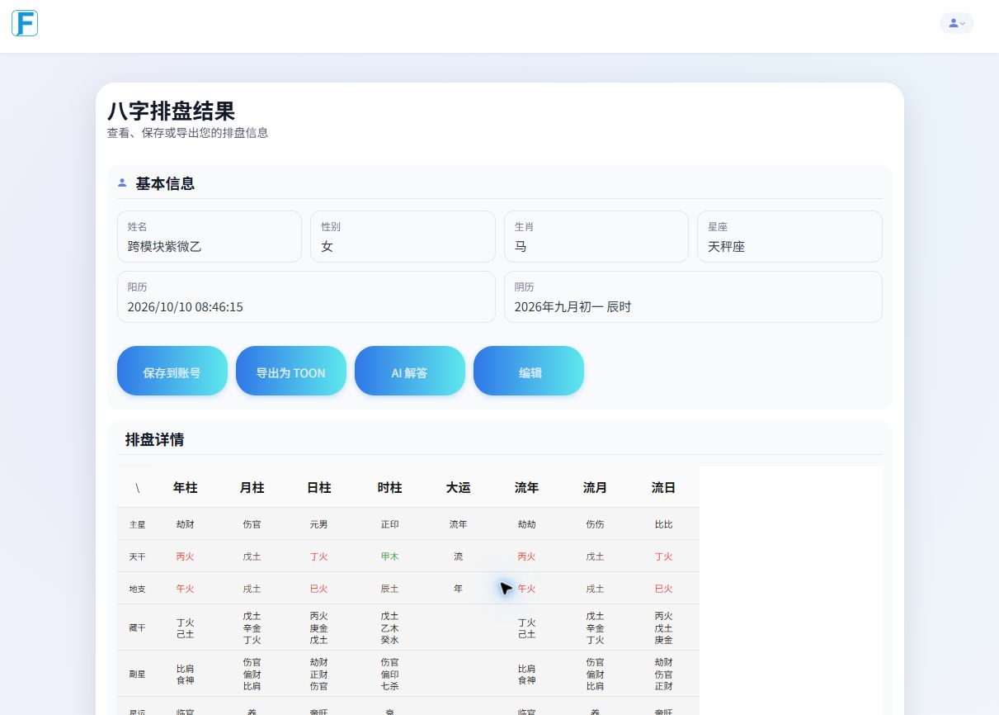
修复内容：八字结果的编辑按钮直接打开 /pages/index/index，回填当前八字快照；表单再次显示时保留自己的记录 ID。
验证结果：Chrome 点击编辑后直接进入八字表单，姓名甲、男、2026 年时间完整回填。编辑路由及重复 onShow 记录 ID 回归通过。
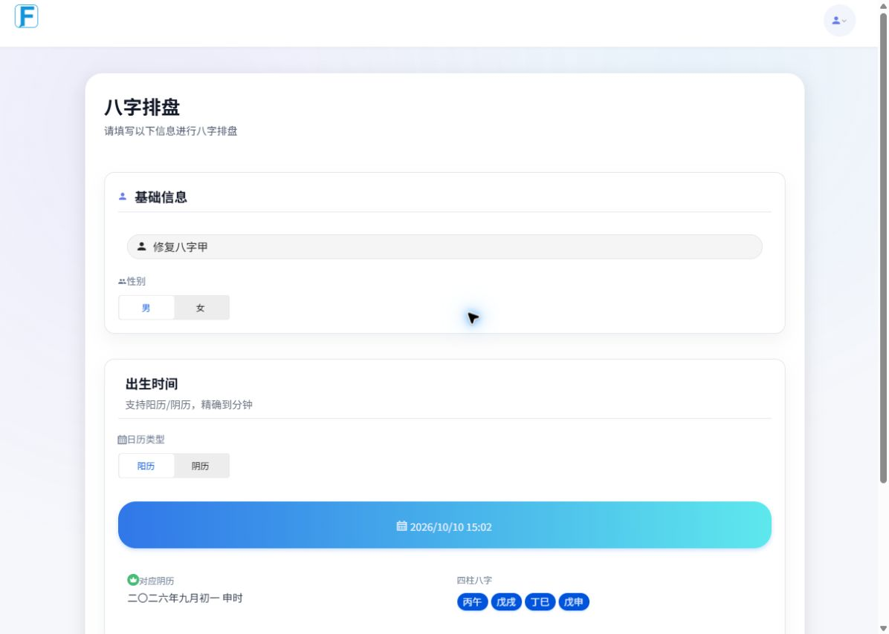
证据方式：Chrome 实际复现 + 源码核对
结果页编辑将路由重置为Agent首页，用户需要再次点击八字立即打开。
原始影响：编辑操作增加无提示的中间步骤，用户容易认为编辑失败。原数据可以恢复，没有观察到本次编辑数据丢失。
原始建议：编辑跳转目标改为 /pages/index/index，并保留现有 edit_bazi_data 回填流程。
首轮源码位置：F:/github/xuanxue_AI-chat-agent/frontend-docker/src/pages/index/detail.nvue:630
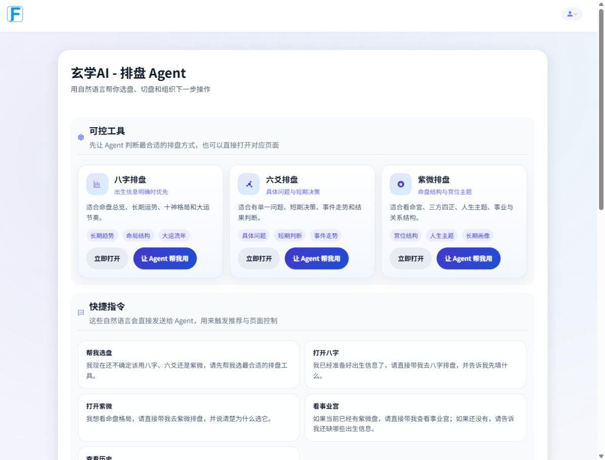
修复内容：两个协议入口连接可滚动正文阅读区，支持关闭、Enter/Space 和 Escape，返回原注册表单。外层按钮统一接收点击事件，修正只点文字才能打开的问题。正文按现有账号、排盘、模型、缓存和访问统计流程编写。
验证结果：Chrome 两个完整按钮入口均可打开，服务说明 Enter 关闭、隐私入口 Space 打开、Escape 返回注册。390px 阅读区可滚动到底。3 个真实组件回归通过，保留 tm-text 的事件边界。
待补验收：正文明确运营主体、联系渠道、服务所在地、留存期限和注销渠道尚未公布；上线前需由实际运营方补充。未进行真实注册或法律合规认证。
服务正文与按钮 · 隐私正文与键盘 · 移动阅读区滚动 · 35 项回归测试
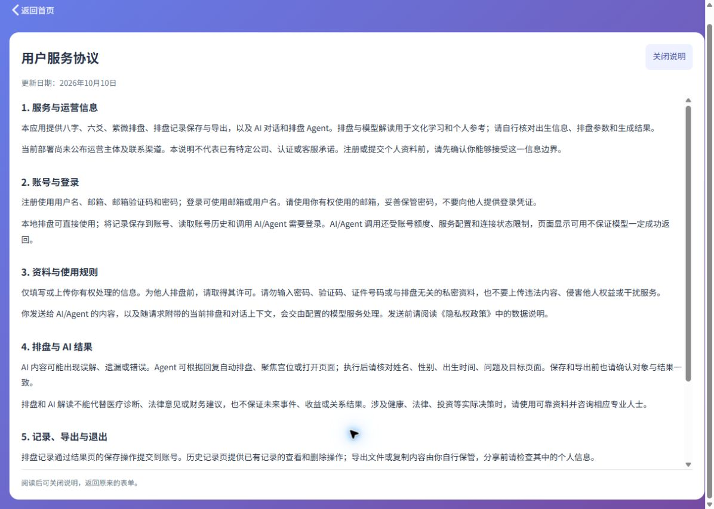
证据方式：Chrome 两个入口均实际点击 + 源码核对
点击两项协议仅提示页面开发中，无法查看正文。
原始影响：注册表单展示了协议名称，但用户无法查阅对应正文。
原始建议：补齐两份可访问的正文页面或弹窗，再连接注册页入口。
首轮源码位置：F:/github/xuanxue_AI-chat-agent/frontend-docker/src/pages/auth/auth.nvue:408
修复内容：小限年龄在自身列宽内换行，每个宫位增加明确放大入口，保留双击及关闭。仅紫微 H5 卡片取消会改变 fixed 包含块的动画 transform，保证滚动后详情完整留在视口内。
验证结果：Chrome 390×844：图宽 304px，十二宫年龄块宽与 scrollWidth 均 44px，没有跨格；放大面板顶部 75.95px、底部 768.03px，字号 14px。明确入口、关闭及原双击均通过；桌面年龄约束同样通过。
待补验收：已验证桌面浏览器的移动尺寸模拟；真实触屏、移动软键盘和全部星曜组合尚未覆盖。
390px 尺寸与宫格 · 完整放大定位与字体 · 原双击回归 · 35 项回归测试
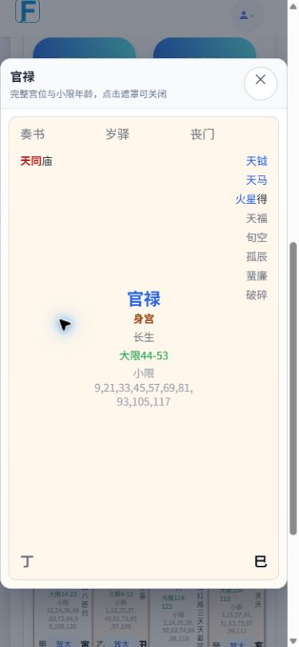
证据方式：390×844 Chrome 布局实测 + 截图 + DOM 尺寸
390px宽度下宫格约75.5px，小限年龄长列表跨格挤压，部分文字难以阅读。 双击宫位可打开14px文字的放大面板，作为当前绕行方案。
原始影响：全页没有横向溢出，但十二宫总览的文字难以辨认：单格约 75.5px，年龄列表约 108.8px，字号 8px。双击宫位可以打开约 374px 宽、年龄字号 14px 的详情面板，已验证可作为绕行方案。
原始建议：总览年龄列表改为简短摘要或受约束的换行显示，突出宫位放大入口；避免长列表覆盖相邻格子。
首轮源码位置：F:/github/xuanxue_AI-chat-agent/frontend-docker/src/pages/ziwei/components/PalaceContent.nvue:299
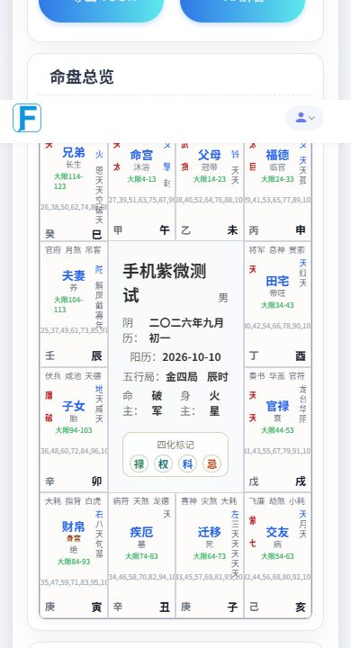
修复内容：首页核心操作提供 H5 按钮角色、Tab 顺序、焦点样式及 Enter/Space 单次激活；禁用发送不进入焦点顺序。菜单支持 Escape 与焦点恢复。按键释放时激活并阻断冒泡，防止同一次 Enter 自动确认新弹窗。
验证结果：Chrome：输入框 Tab 到发送按钮，显示焦点边框；Enter 停在登录提示，Space 激活快捷指令；菜单 Tab/Escape 恢复焦点，工具 Enter 打开八字。空发送 tabIndex=-1/aria-disabled=true，输入框 Enter 也不会自动确认。7 个组件事件回归通过。
待补验收：结论限于首页核心操作及所列控件；非 H5 构建、屏幕阅读器与全站无障碍合规尚未验收。
Tab 与 Enter · Space 快捷指令 · 菜单与工具导航 · 输入框事件隔离 · 35 项回归测试
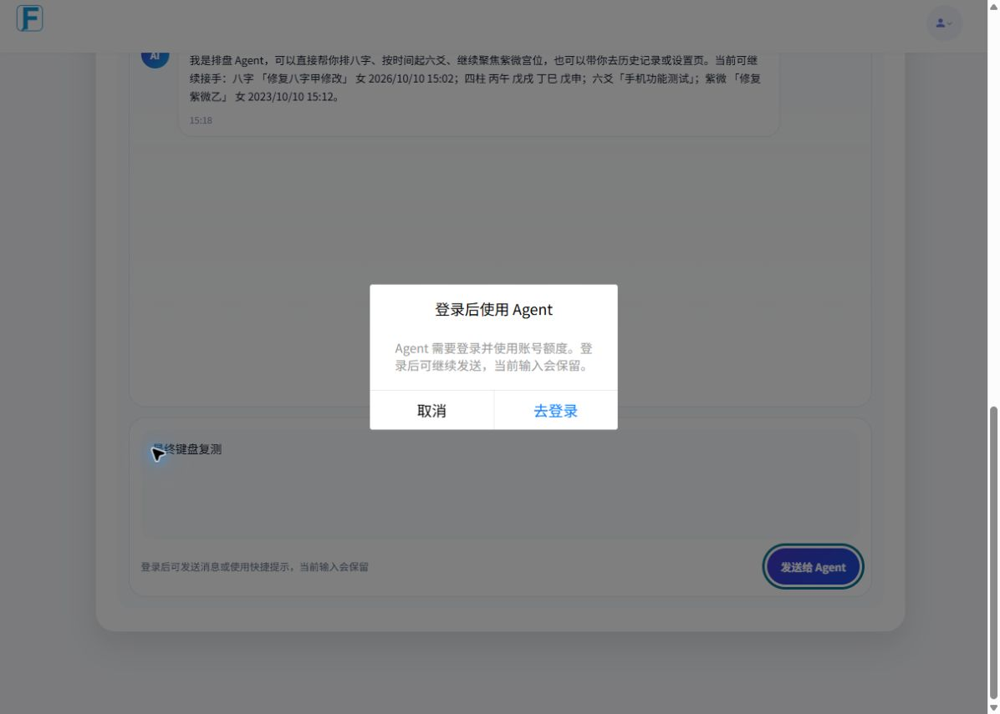
证据方式：实际 Tab 操作 + DOM 焦点检查
实际按Tab跳出输入框后未到发送按钮；首页可见焦点控件仅textarea。
原始影响：首页的发送、工具卡和头像导航不能通过常规 Tab 顺序到达。发送控件渲染为 uni-button，tabIndex=-1，且没有 button 角色。该结论限于本次首页样本，不等同于全站无障碍合规审计。
原始建议：为 H5 操作控件提供正确的按钮语义、焦点顺序及 Enter/Space 触发方式，并补充焦点样式。
首轮源码位置：F:/github/xuanxue_AI-chat-agent/frontend-docker/src/components/agent/AgentConsolePanel.vue:62
修复内容：移除紫微 store 两条过期的 @ts-expect-error，保留类型检查。
验证结果：最终 vue-tsc --noEmit 退出码 0，无诊断；H5 构建退出码 0；ESLint 88 个文件，0 错误、0 警告。
修复后类型检查 · 修复后构建 · 修复后 ESLint
证据方式：实际执行 vue-tsc，退出码 2
TS2578两处，类型检查退出码2。
原始影响：H5 构建通过，但类型检查不能作为通过的质量门禁。
原始建议：清理过期的 @ts-expect-error 注释，重新执行 typecheck，确认无新增类型错误。
首轮源码位置：F:/github/xuanxue_AI-chat-agent/frontend-docker/src/store/ziwei.ts:88
修复内容：保留后端鉴权和额度规则，纠正文案为登录后使用并按账号额度调用。自由输入与快捷提示共用发送前校验，未登录不发 Agent API，提供可取消的登录引导并保留草稿。
验证结果：Chrome 自由输入及快捷指令均弹出登录引导；网络采集未出现 Agent API 请求；取消保留草稿，确认进入登录页。6 个认证回归通过，含真实客户端 Bearer 请求及凭证删除后的拦截。
待补验收：真实认证、Agent回复及导航已通过；多轮聊天与性能边界见B-07、B-12。
匿名输入与网络 · 快捷指令与登录引导 · 35 项回归测试
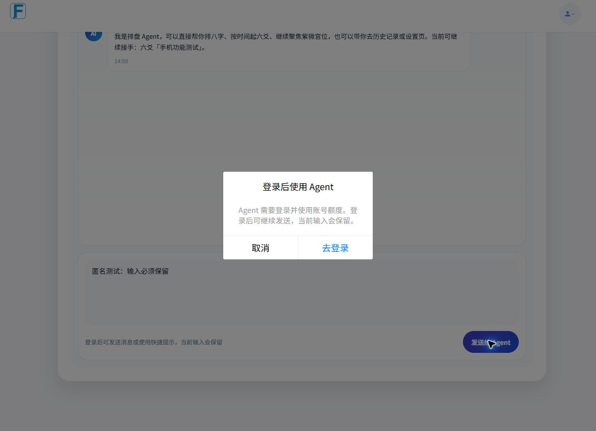
证据方式：首页文案实测 + 前后端源码确认；401 未运行复现
首页宣称无需登录；agent请求设置needAuth=true，后端agent路由authMiddleware在无token时返回401。此项为源码确认，当前500未能运行验证401。
原始影响：提供的后端实现不支持文案承诺的匿名调用。当前测试请求因后端未启动而得到 500，不能把该 500 当成 401 的运行证据。
原始建议：确认产品预期：若要求登录，应调整文案并提供登录引导；若支持匿名，应实现相应的匿名接口策略，再补跑真实请求测试。
首轮源码位置：F:/github/xuanxue_AI-chat-agent/frontend-docker/src/features/agent/useAgentPage.ts:57F:/github/xuanxue_AI-chat-agent/backend-docker/routes/llm.js:332F:/github/xuanxue_AI-chat-agent/backend-docker/middleware/auth.js:15
首轮浏览器实际请求的以下接口返回 HTTP 500。Vite 默认将 /api 代理至 http://localhost:3001，而首轮监听检查只看到前端 3000。首轮 500 是测试环境未具备完整后台时的结果，不能据此判断模型服务、认证、邮件或数据库业务实现本身存在同样的故障。
| 方法 | 路径 | 浏览器状态 |
|---|---|---|
| POST | /api/llm/agent | 500 |
| POST | /api/auth/login | 500 |
| POST | /api/llm/chat | 500 |
| POST | /api/llm/chat | 500 |
| GET | /api/announcements?onlyMeta=true | 500 |
脱敏网络证据仅保存方法、URL、状态和请求 ID，不含请求正文、认证令牌或响应头。聊天流式失败后又回退一次普通请求，两次都为 500。
首轮这些流程未完成；后续登录、三类记录、额度和 AI 的逐项进展已记录在上方后台最新现状。原始网络结果保留，不覆盖历史证据。
“通过”仅代表该行所述结果；“阻塞”包括实际遇到 500 的流程和依赖登录而未能继续的流程；“未验证”保留下载文件、原生文件选择及外部档案的实际内容边界。
| 编号 / 模块 | 检查项 | 结果 | 实际与预期 | 证据 |
|---|---|---|---|---|
NAV-01首页 | Chrome 加载首页 | 通过 | 首页标题、三张工具卡、快捷指令和输入框均显示 预期：首页完整可操作 | 查看证据 |
LAY-01布局 | 桌面首页无整页横向溢出 | 通过 | 页面宽 1211px，视口宽 1211px 预期：页面宽度不超过视口 | 查看证据 |
AG-01Agent | 空消息提交 | 通过 | 未创建空消息，页面保持可用 预期：忽略空输入 | 见操作结果 / 对应模块证据 |
AG-02Agent | 快捷指令与错误恢复 | 阻塞 | 快捷指令进入对话，但返回请求失败(500)，输入框恢复可用 预期：模型返回推荐并执行动作 | 查看证据 |
BZ-01八字 | 首页进入八字输入页 | 通过 | 姓名、性别、历法、时间和四柱预览均显示 预期：完整输入页面 | 查看证据 |
BZ-02八字 | 切换阴历展示 | 通过 | 切换为二〇二六年九月初一，并显示对应阳历2026/10/10，四柱保持一致 预期：历法切换不改变同一时刻 | 见操作结果 / 对应模块证据 |
BZ-03八字 | 农历年份选择并确认 | 通过 | 2025年九月初一应用为2025/10/21 08:00，四柱预览更新 预期：新日期应用并关闭选择器 | 见操作结果 / 对应模块证据 |
BZ-04八字 | 姓名、女性、农历输入生成完整结果 | 通过 | 结果姓名功能测试甲，性别女，时间2025/10/21 08:00，四柱乙巳/丙戌/癸亥/丙辰 预期：输入字段与结果一致 | 查看证据 |
BZ-06八字 | 大运选择联动流年 | 通过 | 2031大运使流年列表更新为2031至2040 预期：大运、流年及详情同步更新 | 见操作结果 / 对应模块证据 |
BZ-05八字 | TOON 导出实际文件 | 未验证 | 按钮点击无页面报错；下载事件等待超时，Chrome内部下载页不允许自动访问 预期：核对实际下载文件内容 | 见操作结果 / 对应模块证据 |
BZ-07八字 | 流年和流月联动流日 | 通过 | 选择2032与惊蛰后，流日变为3月5日至4月3日 预期：下级时间线跟随选择 | 查看证据 |
BZ-08八字 | 流日选择 | 通过 | 可选择3月6日，页面继续显示排盘与时间线 预期：点击流日可更新选中状态 | 见操作结果 / 对应模块证据 |
BZ-09八字 | 未登录保存拦截 | 通过 | 显示请先登录账号后再保存 预期：明确登录提示且不虚报保存成功 | 见操作结果 / 对应模块证据 |
BZ-10八字 | 编辑按钮返回输入表单 | 失败 | 点击编辑后回到Agent首页，未直接进入八字编辑表单 预期：进入原输入表单并回填原始数据 | 查看证据 |
BZ-11八字 | 再次进入输入页回填 | 通过 | 姓名与2025/10/21 08:00可恢复，显示已加载数据 预期：编辑数据不丢失 | 见操作结果 / 对应模块证据 |
BZ-12八字 | 阳历选择取消 | 通过 | 取消后日期仍为08:00 预期：取消不应用修改 | 见操作结果 / 对应模块证据 |
BZ-13八字 | 阳历分钟滚轮确认 | 通过 | 拖动分钟滚轮后确认，日期更新为08:01 预期：所选分钟应用到输入值 | 见操作结果 / 对应模块证据 |
LY-01六爻 | 空问题与未生成卦象提交 | 通过 | 两次提交均留在输入页，不生成不完整结果 预期：缺少必填项时阻止排盘 | 见操作结果 / 对应模块证据 |
LY-02六爻 | 电脑自动生成六爻 | 通过 | 显示第1至第6爻与少阳老阴等状态 预期：生成六项爻象 | 查看证据 |
LY-03六爻 | 生成完整结果并保留问题性别 | 通过 | 女性、问题、六神六亲、本卦变卦和卦辞正常显示 预期：输入与结果一致 | 查看证据 |
LY-04六爻 | 复制排盘 | 通过 | 剪贴板含问题、时间、本卦变卦及六爻 预期：复制完整文本 | 查看证据 |
LY-05六爻 | 未登录保存提示 | 通过 | 提示请先登录账号 预期：拦截匿名保存 | 见操作结果 / 对应模块证据 |
AU-01登录注册 | 空表单与缺少密码登录 | 通过 | 两种无效提交都留在登录页 预期：必填不足时阻止登录 | 查看证据 |
AU-02登录注册 | 合成凭据登录请求 | 阻塞 | 服务器错误，请稍后重试；后台未运行 预期：服务端返回可解释的登录结果 | 查看证据 |
AU-03登录注册 | 注册非法邮箱验证码校验 | 通过 | 邮箱格式不正确，未发送验证码 预期：非法邮箱应被拒绝 | 见操作结果 / 对应模块证据 |
AU-04登录注册 | 用户协议与隐私政策入口 | 失败 | 两个入口均只有页面开发中提示，无正文 预期：注册前可以查阅协议正文 | 查看证据 |
LY-06六爻 | 在线逐次摇卦 | 通过 | 连续6次点击生成六爻，显示在线起卦完成 预期：每次增加一爻，六次完成 | 查看证据 |
LY-07六爻 | 手工指定与动爻变卦 | 通过 | 上爻老阳其余少阳，生成乾为天与泽天夬 预期：指定爻象影响本卦变卦 | 查看证据 |
LY-08六爻 | AI 解读页面携带排盘入口 | 通过 | 跳到聊天页并显示已加载六爻排盘结果 预期：展示当前盘的解读上下文 | 见操作结果 / 对应模块证据 |
LY-09六爻 | 时间起卦完整流程 | 通过 | heading "天水讼" [level=3]；heading "风水涣" [level=3] 预期：按选定时间生成本卦变卦 | 查看证据 |
LY-10六爻 | 单数空值校验 | 通过 | 空输入不生成参数 预期：缺少数字时拒绝生成 | 见操作结果 / 对应模块证据 |
LY-11六爻 | 单数2652完整流程 | 通过 | heading "泽雷随" [level=3]；heading "天雷无妄" [level=3] 预期：数字转六爻并生成结果 | 查看证据 |
LY-12六爻 | 双数缺少第二组校验 | 通过 | 未生成六爻预览 预期：缺少第二组时拒绝生成 | 见操作结果 / 对应模块证据 |
LY-13六爻 | 双数123和456完整流程 | 通过 | heading "火地晋" [level=3]；heading "火山旅" [level=3] 预期：两组数字生成结果 | 查看证据 |
LY-14六爻 | 非汉字生成拦截 | 通过 | abc不生成六爻预览 预期：无汉字时拒绝生成 | 见操作结果 / 对应模块证据 |
LY-15六爻 | 汉字天地完整流程 | 通过 | heading "雷水解" [level=3]；heading "地水师" [level=3] 预期：有效汉字生成六爻结果 | 查看证据 |
LY-16六爻 | 卦名指定乾为天变坤为地 | 通过 | 结果主卦乾为天、变卦坤为地 预期：结果与所选卦名一致 | 查看证据 |
ZW-01紫微 | 姓名女性生成十二宫命盘 | 通过 | 功能测试乙、女、金四局与十二宫显示完整 预期：输入与结果一致，命盘可见 | 查看证据 |
ZW-02紫微 | 点击官禄宫聚焦 | 通过 | 宫位出现cell-focused与highlight-bg可视类 预期：点击宫位可以高亮 | 见操作结果 / 对应模块证据 |
ZW-03紫微 | 大限14至23联动流年 | 通过 | 当前运限癸巳大限，流年2039至2048 预期：时间轴下一级正确更新 | 见操作结果 / 对应模块证据 |
ZW-04紫微 | 流年2040与二月选择 | 通过 | 显示十二个月，选择二月后运限与宫位标记改变 预期：流年及流月可以切换 | 查看证据 |
ZW-05紫微 | 编辑信息回填 | 通过 | 返回紫微输入页，姓名功能测试乙、时间仍保留 预期：回到紫微输入并回填 | 查看证据 |
ZW-06紫微 | TOON 导出按钮 | 未验证 | 点击后无页面错误；实际下载内容未验证 预期：有效文件下载及内容一致 | 见操作结果 / 对应模块证据 |
ZW-07紫微 | 阴历显示与重排 | 通过 | 阴历与阳历显示同步，重新排盘成功 预期：日历切换不改变同一时刻 | 见操作结果 / 对应模块证据 |
ZW-08紫微 | AI 解答入口 | 通过 | 聊天页显示已加载紫微命盘 预期：导航与上下文提示完整 | 查看证据 |
CH-01聊天 | 空消息提交 | 通过 | 空提交未增加消息 预期：空输入不发送 | 见操作结果 / 对应模块证据 |
CH-02聊天 | 合成消息请求与错误恢复 | 阻塞 | 显示请求失败500，发送状态恢复且输入可用 预期：得到AI回复 | 查看证据 |
CH-03聊天 | 保存聊天文件 | 未验证 | 触发保存文件选择流程后显示用户取消请求 预期：保存文件并核对内容 | 见操作结果 / 对应模块证据 |
HI-01历史记录 | 匿名空状态、刷新和去登录 | 通过 | 明确登录提示，刷新正常，去登录进入认证页 预期：未登录不显示他人记录 | 查看证据 |
NAV-02导航公告 | 头像菜单展开与公告 | 阻塞 | 菜单完整，公告弹窗可开关；内容请求500 预期：公告可以加载 | 查看证据 |
AB-01关于 | 内容及图片加载 | 通过 | 作者经历、娱乐提示与两张图片正常加载 预期：文字图片完整 | 查看证据 |
BZ-14八字 | 带本地缓存直接打开结果页 | 通过 | 新标签页可恢复功能测试甲四柱及时间 预期：已有缓存可恢复结果 | 查看证据 |
LY-17六爻 | 带缓存直接打开结果页 | 通过 | 新标签可恢复乾为天与坤为地结果 预期：已有缓存可恢复 | 查看证据 |
ZW-09紫微 | 无命盘状态直接打开结果页 | 通过 | 新标签提示暂无排盘数据，并提供返回排盘入口 预期：无内存命盘时提供恢复入口 | 查看证据 |
RS-01移动布局 | 首页390×844 | 通过 | 整页宽度390，无横向溢出，卡片垂直排列 预期：手机宽度可阅读 | 查看证据 |
RS-02移动布局 | 八字输入390×844 | 通过 | 整页宽度390，标题与字段仍显示 预期：手机输入表单无全页横向溢出 | 查看证据 |
RS-03移动布局 | 八字结果390×844 | 通过 | 整页390，详情表局部693宽可横向滚动 预期：全页不横向溢出，宽表局部滚动 | 查看证据 |
BZ-15八字 | AI 解答跳转聊天页 | 通过 | 跳到from=bazi聊天页，显示通用问候与输入框 预期：进入八字聊天入口 | 查看证据 |
RS-04移动布局 | 聊天390×844 | 通过 | 宽度390，输入可用，聊天上下文可读 预期：手机聊天布局可操作 | 查看证据 |
RS-05移动布局 | 六爻输入390×844 | 通过 | 整页宽度390，卦名与基础信息可见 预期：手机表单无整页横向溢出 | 查看证据 |
RS-06移动布局 | 六爻结果390×844 | 通过 | 手机生成结果成功，整页宽390 预期：手机可排盘且无全页横向溢出 | 查看证据 |
RS-07移动布局 | 紫微输入390×844 | 通过 | 整页宽度390 预期：手机输入无全页横向溢出 | 查看证据 |
RS-08移动布局 | 紫微结果390×844 | 失败 | 页面无横向溢出，但十二宫每格约75.5px，小限数字溢出并相互挤压 预期：宫位文字应可读且不覆盖相邻宫格 | 查看证据 |
ZW-10紫微 | 未登录保存拦截 | 通过 | 显示请先登录并进入认证页 预期：匿名用户不虚报保存成功 | 见操作结果 / 对应模块证据 |
RS-09移动布局 | 登录和注册390×844 | 通过 | 两页整页宽度390，字段可见 预期：手机认证布局无全页横向溢出 | 查看证据 |
RS-10移动布局 | 历史390×844 | 通过 | 空状态与登录按钮可见，宽度390 预期：手机空状态可阅读 | 查看证据 |
RS-11移动布局 | 关于390×844 | 通过 | 整页宽390，正文与图片宽度适配 预期：手机内容无横向溢出 | 查看证据 |
ZW-11紫微 | 双击宫位放大及关闭 | 通过 | 双击官禄打开宫位详情；手机面板约374px，年龄文字14px 预期：可放大查看密集宫位信息 | 查看证据 |
KB-01键盘可访问性 | 首页 Tab 焦点到发送按钮 | 失败 | 输入框按Tab后焦点回到body；发送控件tabIndex=-1、无button角色；可见可聚焦控件仅textarea 预期：Tab可到达发送及导航操作 | 查看证据 |
SC-01工程检查 | H5生产构建 | 通过 | 命令退出0，生成H5产物 预期：生产构建可完成 | 查看证据 |
SC-02工程检查 | TypeScript类型检查 | 失败 | ziwei.ts第88、98行存在两处未使用ts-expect-error，退出2 预期：typecheck退出0 | 查看证据 |
SC-03工程检查 | ESLint全量配置检查 | 通过 | 84个文件，0错误0警告，退出0 预期：lint检查通过 | 查看证据 |
AU-05登录注册 | 用户名不足2字符 | 通过 | 合成验证码和密码已填，用户名a被明确拒绝 预期：用户名长度校验 | 见操作结果 / 对应模块证据 |
AU-06登录注册 | 少于6位密码 | 通过 | 123使注册UNI-BUTTON disabled=true，提交未发出 预期：短密码阻止注册 | 见操作结果 / 对应模块证据 |
AU-07登录注册 | 两次密码不同 | 通过 | 确认密码不一致时disabled=true，不提交 预期：密码一致性校验 | 查看证据 |
AU-08登录注册 | 邮箱验证码及注册成功 | 阻塞 | 无后端和邮件服务；未创建真实账户 预期：有效验证码与账号创建完成 | 见操作结果 / 对应模块证据 |
HI-02历史记录 | 登录后筛选、查看、修改和删除记录 | 阻塞 | 无法登录，服务端记录读写不能端到端执行 预期：记录可正常管理 | 见操作结果 / 对应模块证据 |
SC-04工程检查 | Agent匿名使用文案与鉴权一致性 | 失败 | 源码证明Agent无token时将被401拒绝，与首页文案不符；运行时仍被500挡住 预期：文案与鉴权一致 | 查看证据 |
CH-04聊天 | 恢复当前测试保存的本地会话 | 通过 | 恢复功能测试消息及当时的500回复，输入仍可用 预期：本地备份恢复合成测试会话 | 查看证据 |
CH-05聊天 | 外部聊天档案文件导入 | 未验证 | 仅验证本地备份恢复，未选择外部加密档案文件 预期：文件导入可解密并还原 | 见操作结果 / 对应模块证据 |
CR-01跨模块一致性 | 生成不同人物紫微后回看八字 | 失败 | 姓名与性别被紫微乙/女覆盖，日期仍为2026/10/10，主星仍元男；紫微日期为2022/10/10 预期：已有结果应保持自身输入信息或整体同步重算 | 查看证据 |
浏览器捕获 0 条 error、98 条 warn，主要为运行时配置加载失败、uni-text 嵌套组件提示、HTTP 流式回退。见 控制台日志。构建还提示 Browserslist 数据较旧；没有因此导致构建失败。
首轮时 package.json 没有独立 test 脚本；修复轮已新增 test 命令和 35 项真实行为回归，结果见上方修复后检查。
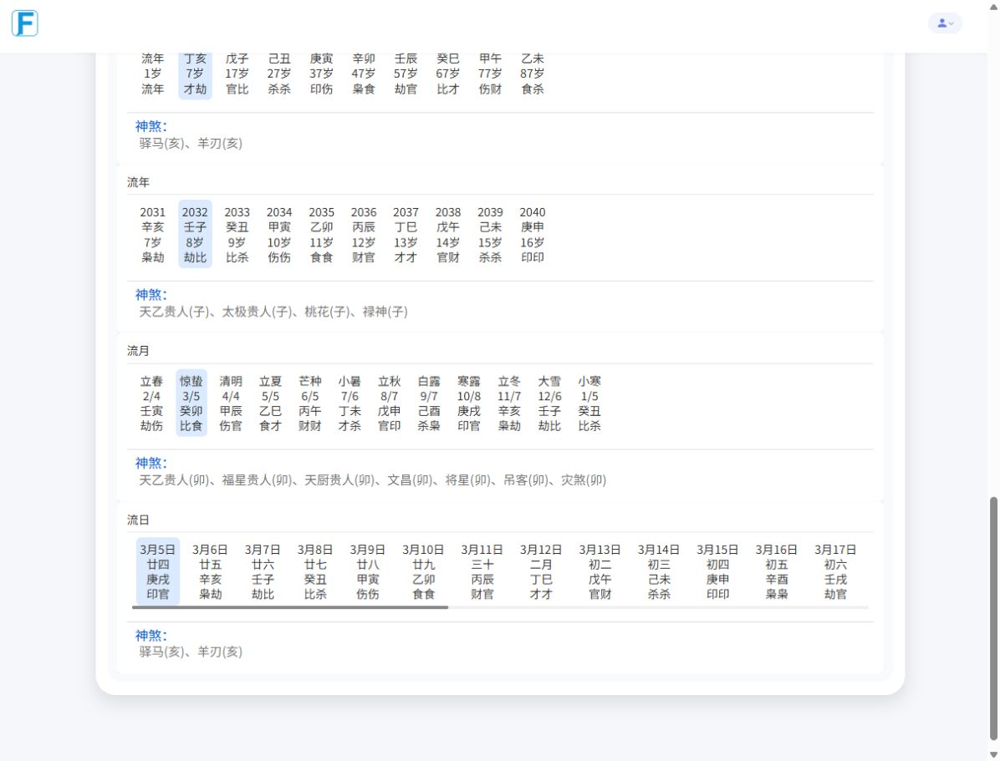
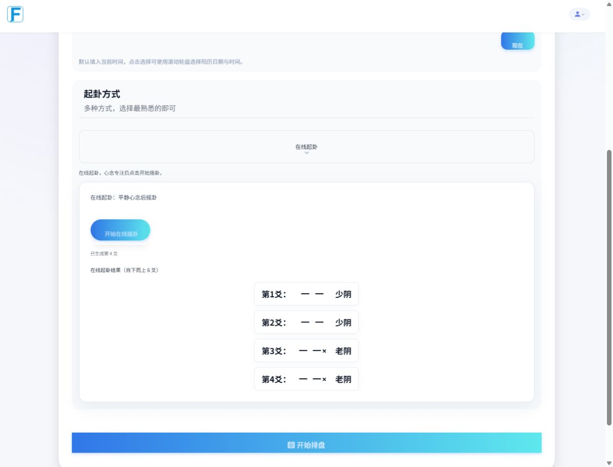
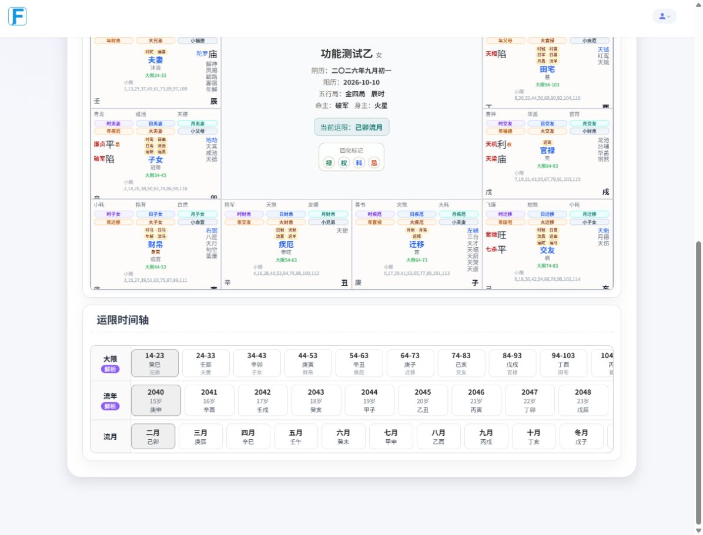
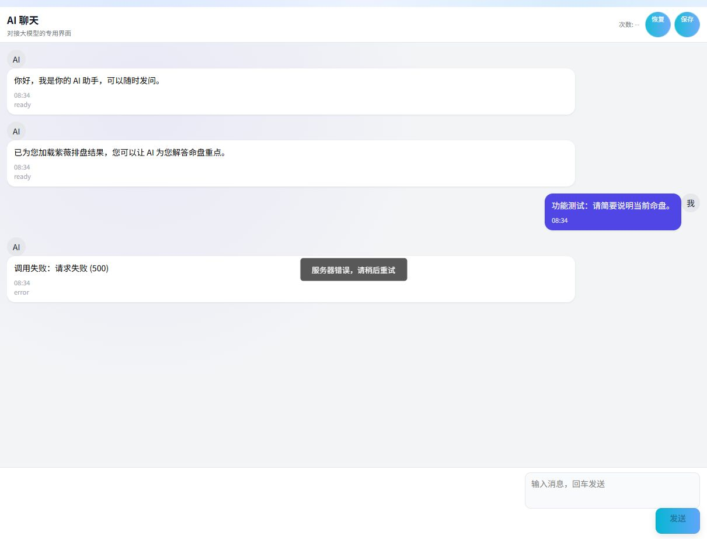
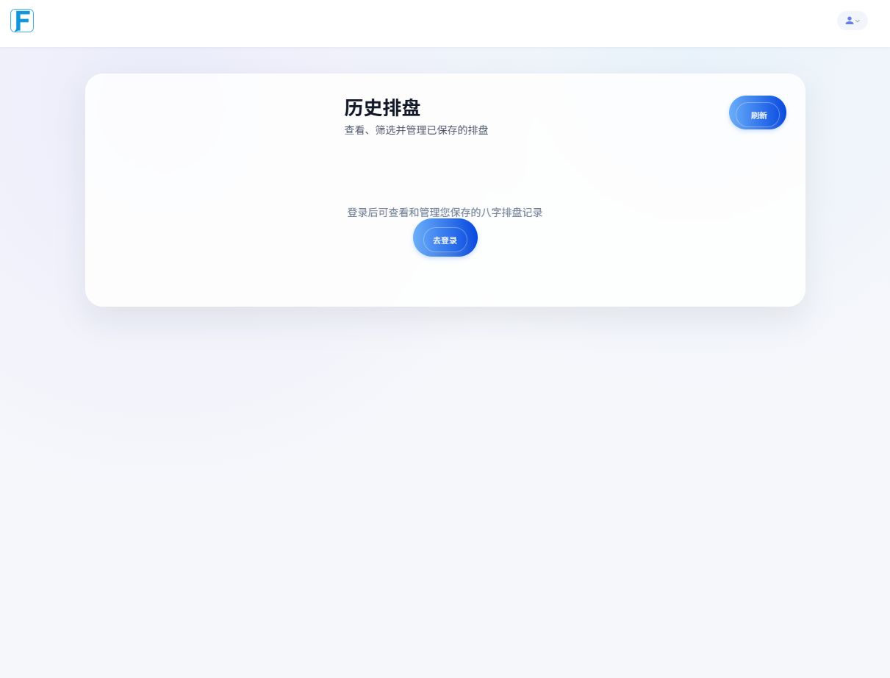
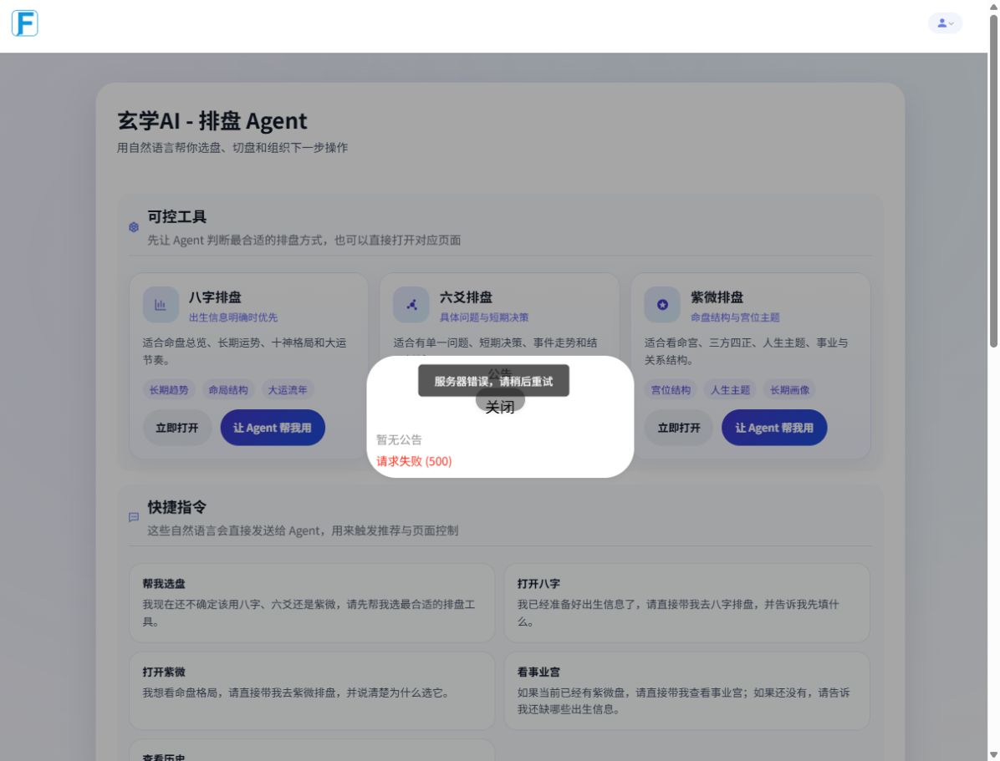
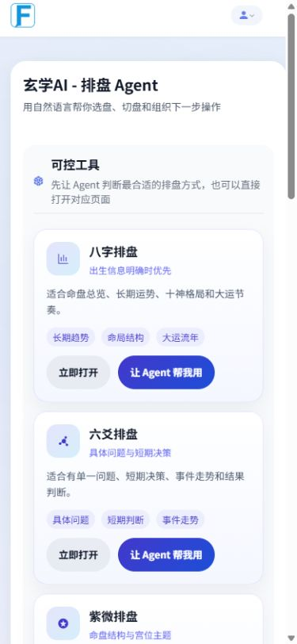
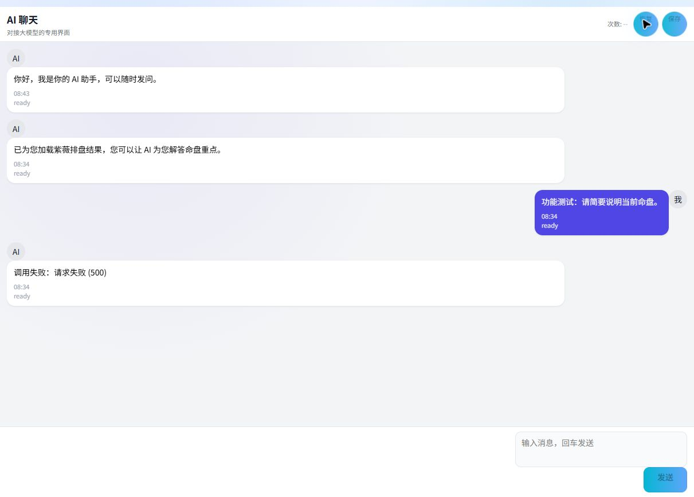